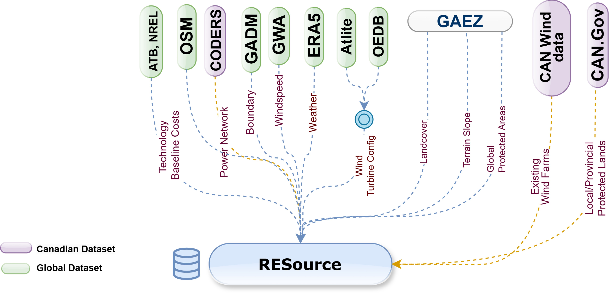

Case study: VRE site selection in British Columbia#
To demonstrate RESource's practical utility, we apply the framework to the Canadian province of British Columbia (BC). BC presents an ideal testbed due to its varied geography—coastal areas, rugged mountains, and interior plateaus—and a favorable policy environment, including the Clean Energy Act, expedited permitting processes for wind projects and renewable energy targeted call for power 2024, 2025 by BC Hydro. These characteristics offer a rich context for testing spatial, technical, and regulatory dimensions of VRE siting.
Data sources#
The RESource framework integrates multiple data sources to characterize VRE potential in BC: Here is a quick overview of the data sources used in this case study:

Coordinate Reference System (CRS)#
CRS is a critical choice when it comes to geospatial analysis. RESource involves area calculations as an impact of spatial filters usage on land availability for site development.
Here is a summary of the CRS used in this tool and study.
CRS (EPSG) |
Name / Projection |
Units |
Coverage |
Purpose and Recommended Use in BC Study |
|---|---|---|---|---|
4326 |
WGS 84 (Geographic) |
Degrees |
Global |
Storage, data exchange, global overlays. |
3005 |
NAD83 / BC Albers Equal Area |
Meters |
BC |
Provincial analyses (area, buffers, land use, siting). Official BC projection. |
3347 |
NAD83 / Canada Albers Equal Area |
Meters |
Canada-wide |
Pan-Canadian analyses (NRCan datasets, multi-province work). 3005 is better suitable for land-area calculations in BC explicit studies. |
3035 |
ETRS89 / LAEA Europe |
Meters |
Europe |
European datasets only (default CRS for atlite's Exclusion Container, i.e. for land area calculation). Not suitable for BC. |
Tip
Users of this tool (or in any other geospatial analysis!) should critically review the preferred CRS for area calculation. Check EPSG Resources for more details on regional coordinate system suitability. Meter/degree-based (default/explicit for regions) CRS is configurable in RESource.
Warning
This library is under heavy development and the publication is under review process. The detailed report is restricted as a requirement from publishers.